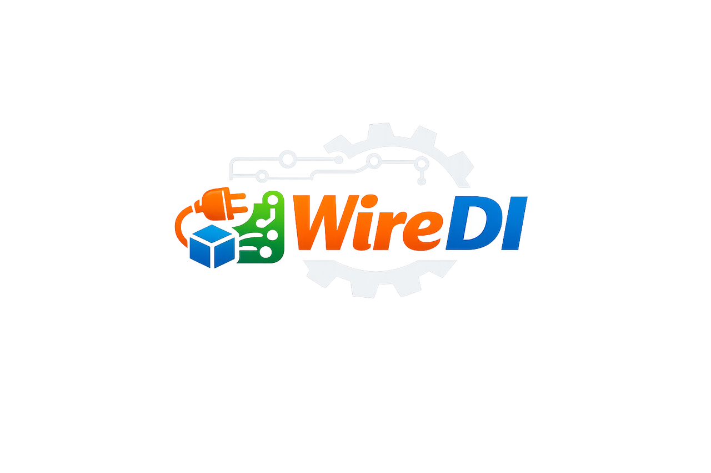

控制反转和依赖注入

控制反转（Inversion of Control, IoC）是面向对象编程中的一种设计原则，用来降低计算机代码之间的耦合程度，控制反转最常见的方式就是依赖注入（Dependency Injection, DI），Wire 就是一个常见的依赖注入工具。
基本概念
控制反转本质是一种把控制权交出去的设计思想：以前是你在代码里自己 new 一个对象、自己决定它什么时候创建、用谁当依赖、怎么组装调用链；IoC 之后，这些“创建 + 组装 + 调度”的控制权交给外部（框架/容器/上层），你的业务代码只描述“我需要什么、我提供什么”，不负责把一切拼起来，能大大降低代码的耦合程度。
依赖注入是 IoC 最常见的方式之一，当 A 需要 B 的时候，不需要A 自己创建，直接通过外部创建好，通过参数传递进来，通过方法字段进行注入，DI 将依赖关系表现得更加显式。
Wire 是 Go 里的编译期依赖注入代码生成工具。它的用途是把你声明的 provider（也就是构造函数）和 injector（也就是装配入口函数）组合起来，自动生成一段等价于你手写 new 然后逐层传参组装的初始化代码。你先定义一个 ProviderSet，比如 ProviderSet = wire.NewSet(NewData, NewRepo, NewUsecase, NewService 等)，再在 wireApp 这种 injector 函数里调用 wire.Build 来表达你最终想得到的对象，比如我要一个 kratos.App。Wire 在生成阶段会根据这些构造函数的类型签名推导依赖关系，计算出正确的创建顺序，检查依赖是否缺失以及是否存在循环依赖，最后生成 wire_gen.go，在里面给出真正可运行的 wireApp 实现，同时把需要释放资源的 cleanup 函数也拼出来。运行时不需要容器，也不需要反射，本质上就是把装配代码自动写出来，让初始化过程更清晰、更安全、更容易维护。
为什么要降低耦合呢？
增加可维护性，防止牵一发动全身
增加可测试性，测试位置更加精准，只跑逻辑本身，更加符合现在设计的理念
增加可替换性，降低代码迭代成本，可能只需要替换一个参数就能实现数据库的替换，不需要进行大改
降低耦合也能提升团队的协作效率，每个人只需要关心自己的一部分。
增加项目可靠性，这样某个部分故障，不容易发生扩散，更容易找出问题。
控制反转
控制反转的常见方法
构造器注入：把依赖作为构造函数参数传入，依赖关系最显式，Go 最推荐。
方法/Setter 注入：通过 setter 或初始化方法注入，适合可选依赖或运行时替换。
字段/属性注入：框架通过反射/标签把依赖塞进结构体字段，写起来省事但依赖隐藏、可测试性差。
接口 + 工厂（Factory）：通过接口隔离具体实现，再用工厂负责创建实现对象，常用于“按配置选择实现”。
抽象工厂/构建器（Abstract Factory / Builder）：当对象组装很复杂、需要分步骤或多套组合方案时用。
服务定位器（Service Locator）：对象自己从“容器”里按 key/类型取依赖（也是 IoC），但依赖不透明，一般不推荐做主方案。
插件化/注册表（Plugin / Registry）：实现通过注册机制挂到 registry，运行时按名称/能力发现与加载。
函数式 Options（Functional Options）：Go 常见，用
WithXxx()注入可选依赖或配置，适合参数很多的构造。Context/请求级注入（Request-scoped Injection）：每个请求携带依赖（如 trace/span、用户信息、事务对象），常见于 web 框架中间件链。
编译期装配（Codegen Wiring）：依赖在编译期被解析并生成装配代码，运行时无容器/无反射（Wire、Dagger 这类）。
依赖注入
依赖注入常见工具
Go
编译期：Google Wire
运行时容器：Uber dig、sarulabs/di、(较老) facebookgo/inject
应用框架化生命周期：Uber fx（基于 dig，带 OnStart/OnStop）
其他思路：手写 main 装配、Functional Options（不算工具但很常用）
Java / JVM
Spring / Spring Boot（运行时容器，注解驱动）
Guice（运行时容器）
Dagger（编译期为主，Android 常见）
Micronaut（偏编译期/减少反射）
.NET
Microsoft.Extensions.DependencyInjection（官方内置 DI）
Autofac、Castle Windsor（第三方容器）
Node.js / TypeScript
NestJS（框架自带 DI）
InversifyJS、tsyringe、typedi（容器/注入库）
Python
dependency-injector（容器）
FastAPI Depends（更偏“依赖解析/函数注入”，request-scoped 很强）
Injector（Guice 风格）
Rust / C++（更少“容器化”，更多手动/编译期）
Rust：更常见是手动装配 + trait 抽象（DI 工具相对少）
C++：Boost.DI（编译期）
Wire
Go社区中有很多依赖注入框架。比如：Uber的dig和Facebook的inject都使用反射来做运行时依赖注入。
wire是一个的 Google 开源的依赖注入工具，通过自动生成代码的方式在编译期完成依赖注入。
wire 中有两个核心概念：提供者（provider）和注入器（injector）。
Provider
provider 通常是一个 New 开头的构造函数，表示实现了某一个结构体，也就是创建了一个对象
package demo
import (
"context"
"errors"
)
type A struct {
Value int
}
func NewA(ctx context.Context, b B) (A, error) {
if b.Value == 0 {
return A{}, errors.New("cannot provide a when value is zero")
}
return A{Value: b.Value + 2}, nil
}提供者函数可以分组为提供者函数集（provider set）。使用wire.NewSet 函数可以将多个提供者函数添加到一个集合中。如果经常同时使用多个提供者函数，这非常有用。
package demo
import (
// ...
"github.com/google/wire"
)
var ProviderSet = wire.NewSet(NewData, NewRepo, NewUsecase, NewService)同时，还可以将其他提供者函数集添加到提供者函数集中。
Injector
应用程序中是用一个注入器来连接提供者，注入器就是一个按照依赖顺序调用提供者。
要声明一个注入器函数只需要在函数体中调用wire.Build。这个函数的返回值也无关紧要，只要它们的类型正确即可。这些值在生成的代码中将被忽略。
func wireApp(*conf.Server, *conf.Data, log.Helper) (*kratos.App, func(), error) {
panic(wire.Build(server.ProviderSet, data.ProviderSet, biz.ProviderSet, service.ProviderSet, newApp))
}wire的安装和使用
在 golang 中使用 install 安装依赖包，通过在注射器同级目录下使用 wire 指令即可完成自动依赖注入
go install github.com/google/wire/cmd/wire@latest
cd cmd/golist
wire通过上面例子会生成一个 wire_gen.go文件，此时依赖注入完成。
// Code generated by Wire. DO NOT EDIT.
//go:generate go run -mod=mod github.com/google/wire/cmd/wire
//go:build !wireinject
// +build !wireinject
package main
import (
"golist/internal/biz"
"golist/internal/conf"
"golist/internal/data"
"golist/internal/server"
"golist/internal/service"
"github.com/go-kratos/kratos/v2"
"github.com/go-kratos/kratos/v2/log"
_ "go.uber.org/automaxprocs"
)
// Injectors from wire.go:
// wireApp init kratos application.
func wireApp(confServer *conf.Server, confData *conf.Data, logger log.Logger) (*kratos.App, func(), error) {
db, err := data.NewDB(confData)
if err != nil {
return nil, nil, err
}
dataData, cleanup, err := data.NewData(db, logger)
if err != nil {
return nil, nil, err
}
todoRepo := data.NewTodoRepo(dataData, logger)
todoUsecase := biz.NewTodoUsecase(todoRepo, logger)
todoService := service.NewTodoService(todoUsecase)
grpcServer := server.NewGRPCServer(confServer, todoService, logger)
httpServer := server.NewHTTPServer(confServer, todoService, logger)
app := newApp(logger, grpcServer, httpServer)
return app, func() {
cleanup()
}, nil
}